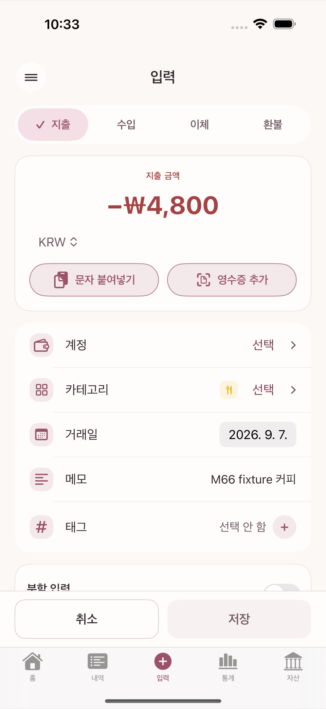
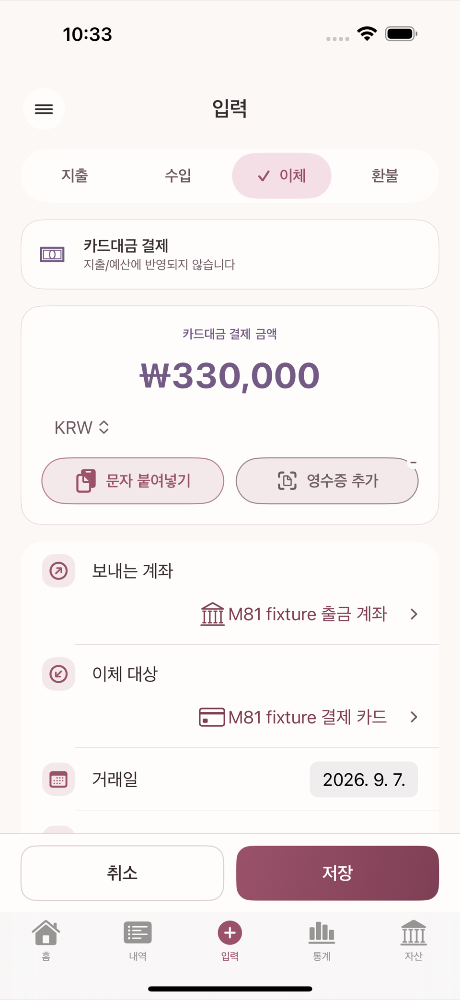
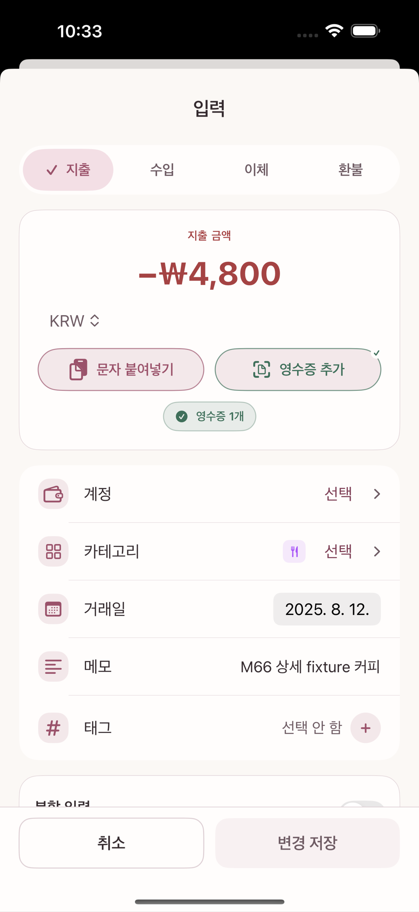
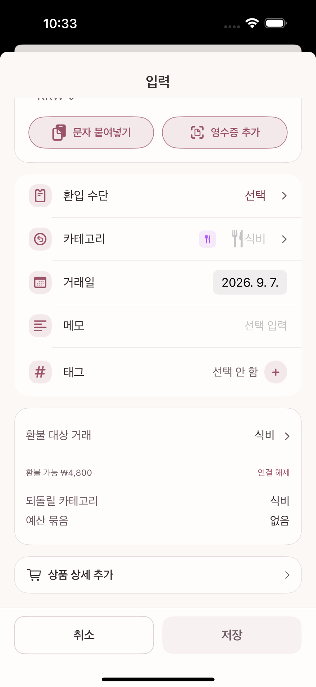

거래 입력은 타미오에서 가장 자주 쓰는 화면이다. 입력 화면 상단에는 지출 · 수입 · 이체 · 환불 네 개의 세그먼트가 있다. 이 장에서는 각 유형이 계좌 잔액과 예산에 어떻게 다르게 영향을 주는지 확인한다.

신용카드 대금을 은행 계좌에서 결제하는 것은 지출이 아니라 이체의 한 종류(카드 결제)로 처리된다. 카드를 쓴 시점(지출 입력)에 이미 그 지출은 예산·통계에 반영됐기 때문에, 대금 결제는 "카드 부채를 갚기 위해 계좌에서 카드로 돈을 옮기는 것"일 뿐이다. 같은 지출을 두 번 세지 않기 위한 구분이다.
이체 세그먼트에서 이체 대상으로 신용카드 계정을 고르면 화면이 자동으로 카드 결제 모드로 전환되고 "지출/예산에 반영되지 않습니다"라는 안내가 뜬다. 별도의 "카드대금" 탭을 먼저 찾을 필요는 없다 — 이체 대상만 신용카드로 고르면 된다.

카드사나 판매처에서 돈이 돌아오면 계좌에 입금된 것처럼 보이지만, 세 유형의 의미는 다르다.
| 입력 유형 | 의미 | 지출·예산에 미치는 영향 |
|---|---|---|
| 이체 | 내 계좌·현금·카드부채 사이에서 위치만 이동 | 비용을 줄이지 않는다 |
| 수입 | 새로 번 돈 | 배정 가능 재원은 늘지만 특정 지출을 취소하지 않는다 |
| 환불 | 이전에 기록한 비용의 전부·일부를 되돌림 | 그 비용과 해당 예산 묶음 사용액을 줄인다 |
환불을 이체로 기록하면 계좌 잔액은 맞아 보여도 원래 지출과 예산 사용액이 그대로 남는다. 수입으로 기록하면 지출은 그대로인데 수입만 늘어 통계 의미가 달라진다. 그래서 환불은 별도 유형이다.


부분 환불이 가능하다. 같은 원거래에 연결된 환불 합계는 원래 지출 금액을 넘을 수 없다. 저장하면 원거래를 고치는 것이 아니라 새 거래가 하나 더 생기고, 원거래는 그대로 남는다. 환불은 환불이 일어난 날짜의 예산·통계에 반영된다 — 원거래가 있던 달이 아니다. 그래서 환불만 있는 기간은 그 카테고리의 지출이나 예산 사용액이 음수로 보일 수 있다.
원거래 연결은 선택 사항이지만, 자동 채움과 초과 환불 방지를 위해 권장한다. 원거래의 영수증· 첨부·태그는 환불 거래에 자동으로 복사되지 않는다. 환불 증빙이 필요하면 환불 거래에 따로 첨부한다.
한 번의 결제에 여러 성격의 지출이 섞여 있을 때(예: 마트에서 식비와 생활용품을 함께 구매) 분할 입력을 사용한다. 이것은 별도 화면이 아니라, 지출 입력 화면 안 카테고리 입력란 위에 있는 "분할 입력" 스위치를 켜면 같은 화면이 분할 줄 편집 UI로 바뀌는 방식이다. 각 분할 줄마다 다른 카테고리·금액을 지정할 수 있고, 분할 합계는 전체 결제액과 반드시 같아야 한다.